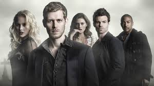

The Originals (em português, Os Originais) é um spin-off produzido pela The CW e baseado na série norte-americana The Vampire Diaries. A história centra-se nos Vampiros Originais na cidade de Nova Orleans
A série teve um "backdoor pilot" na quarta temporada de The Vampire Diaries, o episódio 20 que foi exibido em 25 de abril de 2013 nos Estados Unidos
A estreia do episódio piloto aconteceu em 3 de outubro de 2013 nos Estados Unidos, uma quinta-feira, no qual houve uma mudança cronológica dos fatos de The Vampire Diaries: os acontecimentos de Nova Orleans e Mystic Falls ocorrem na mesma linha de tempo para facilitar possíveis crossovers. Julie Plec, produtora de The Vampire Diaries, foi quem assinou o piloto do spin-off. Leslie Morgenstein e Gina Girolamo foram auxiliares na produção. A terceira temporada estreou no dia 8 de outubro de 2015. A série foi renovada para uma quarta temporada com a estreia transferida para 2017.
No Brasil, a série é exibida pela MTV. A 1ª temporada estreou no dia 17 de março de 2014 e foi até o dia 11 de agosto de 2014. E entre os dias 10 de novembro de 2014 à 22 de junho de 2015, a emissora exibiu com exclusividade a 2ª temporada, um mês depois de estrear nos EUA e terminar quase um mês depois de ser exibida nos EUA. A 3ª temporada começou a ser exibida no canal no dia 26 de outubro de 2015, duas semanas após estrear nos Estados Unidos.
Em março de 2016, a The CW renovou a série para uma quarta temporada, com um número de episódios reduzido para 13, além de sua estreia ser movida para 17 de março de 2017.
Em 10 de maio de 2017, The Originals foi renovada para uma quinta temporada, a primeira sem conter Michael Narducci como produtor executivo.
No dia 20 de julho de 2017, por meio de um comunicado no Twitter, a produtora executiva Julie Plec anunciou a quinta temporada como a última da série.
Em 11 de maio de 2018, a CW anunciou um spin-off de The Originals, intitulado Legacies, com estreia prevista para o segundo semestre de 2018 no canal norte-americano. Julie Plec mantém-se como produtora executiva do novo show junto com Brett Matthews, Leslie Morgenstein e Gina Girolamo. Os atores Matt Davis e Danielle Rose Russell foram confirmados no elenco regular da série, em junho de 2020, foi confirmado que entrará no catálogo da GloboPlay do Brasil, as séries "The Originals" e também "Legacies" seriam adicionados na plataforma. As cinco temporadas da série entrou no catálogo no Prime Vídeo Brasil em janeiro de 2021 e na HBO Max no dia 14 de julho de 2021[11].
PRIMEIRA TEMPORADA
Família é poder. A Família Mikaelson jurou, havia séculos, cuidar de si mesma. Eles se comprometeram a permanecerem juntos, sempre e para sempre. Agora, séculos se passaram, e os laços familiares são quebrados. Tempo, tragédia e fome por poder têm separado a Família Original.
Niklaus Mikaelson, o original híbrido de vampiro e lobisomem, retornou à Nova Orleans, a cidade que sua família ajudou a construir, a cidade que ele e os irmãos – Elijah e Rebekah – foram exilados séculos antes pelo pai caçador. Atraído de volta por uma misteriosa dica de que uma conspiração está se formando contra ele no caldeirão sobrenatural que é o Quartel Francês, Niklaus está surpreso por a cidade ainda parecer um lar para ele apesar das décadas longe. Curioso para saber por que Niklaus voltaria para o lugar que jurou nunca mais colocar os pés novamente, Elijah segue o irmão e descobre que a linda e rebelde lobisomem Hayley – que teve um caso com Klaus – também vem ao Quartel Francês procurando pistas sobre sua família. Hayley caiu nas mãos de uma poderosa bruxa chamada Sophie Deveraux. Quando Sophie revela aos irmãos a quase inacreditável notícia de que Hayley está carregando um filho de Klaus, Elijah percebe que a Família Original tem uma segunda chance de humanidade e redenção que eles desesperadamente ansiavam.
Niklaus, entretanto, não está tão convencido que um potencial herdeiro tenha alguma importância. Ele está mais intrigado com o inesperado encontro com seu ex-protegido, Marcel Gerard, um carismático mas diabólico vampiro que agora tem total controle sobre humanos e os habitantes sobrenaturais de Nova Orleans. Tensões entre as facções da cidade – vampiros, bruxas, lobisomens e humanos – estão se aproximando ao ponto de ruptura, enquanto Marcel comanda seus devotos seguidores e regras com absoluto poder. Para Klaus, a ideia de responder ao seu protegido é impensável. Como Klaus prometeu recuperar o que foi seu uma vez, ele percebe que Elijah está certo e que a criança que ainda não nasceu pode ser a chave para os Originais voltarem ao poder.
Enquanto eles esperam pela irmã Rebekah encontrá-los em Nova Orleans, Klaus e Elijah formam uma difícil aliança com Sophie e sua comunidade de bruxas. Sophie se transformou numa revolucionária por causa da perda de sua irmã nas mãos de Marcel, e pelo misterioso desaparecimento da jovem bruxa chamada Davina, e ela está disposta a fazer qualquer coisa – incluindo fazer um acordo com a Família Original – para quebrar o poder de Marcel sobre as bruxas do Quartel Francês.
Até mesmo a população humana de Quartel é arrastada ao campo de batalha. Recém chegada à Nova Orleans, Camille é uma inteligente graduada em psicologia que parece feliz com seus estudos de dia e trabalho como garçonete a noite, sem saber que muitos de seus clientes são vampiros. Escondendo o sombrio segredo que a trouxe à Nova Orleans, Camille logo se encontra fascinada por Klaus e Marcel, e totalmente inconsciente do perigo para ela e para todos ao seu redor. Agora, no meio de uma próspera Nova Orleans, uma cidade conhecida por ser mergulhada em magia e história, a latente longa guerra fica ainda mais quente, e os Originais ficam conhecidos como catalisadores. Com as linhas desenhadas e estratégias traçadas, uma verdade ecoará sobre o Quartel Francês – o poder começa e acaba a família.
SEGUNDA TEMPORADA

Klaus e Elijah agora enfrentam um inimigo maior, seus pais Esther e Mikael, enquanto devem proteger Hope. Hayley tenta se controlar agora que é uma híbrida. Davina aproxima-se de Kaleb, um bruxo possuído por Kol Mikaelson. No meio a diversos perigos a família Mikaelson deve se proteger com toda a força possível. O pai biológico de Klaus volta a vida graças a Esther. Finn, agora também ressuscitado, prova ser um grande inimigo. Josh entra em um relacionamento com Aiden. Aparece a primeira filha de Esther e Mikael, a poderosa bruxa Freya Mikaelson, junto de sua tia e irmã de Esther, Dahlia, que veio atrás de Hope e se mostra como quase invencível.
TERCEIRA TEMPORADA
Klaus e Elijah encontram-se afastados um do outro, até mesmo quando os dois meio-irmãos ajudam Freya Mikaelson, sua irmã há muito perdida, a adaptar-se à sua vida. Hayley sofre poderosamente nas mãos de uma pequena vingança de Klaus, enquanto Marcel e Davina governam Nova Orleans, ambos através de um novo status de vida. Enquanto isso, Camille e Vincent encontram-se presos em um mistério surpreendente envolvendo os mais novos residentes de Nova Orleans - os primeiros vampiros existentes procriados pelos Mikaelson.
QUARTA TEMPORADA
Cinco anos se passaram desde a queda da família Mikaelson e apesar de Marcel ter instaurado uma nova era de paz no French Quarter de Nova Orleans, um exército de vampiros desconhecidos chegam para negociar a vida do híbrido original Klaus, ainda preso em cativeiro por Marcel. Enquanto isso, os outros irmãos Mikaelson permanecem presos em um sono, com Hayley trabalhando incansavelmente para encontrar meios para acorda-los em segurança, ao mesmo tempo que tenta proteger sua filha Hope. Após um resgate audacioso, os Mikaelson são reunidos e encontram-se diante de uma ameaça ainda maior: o renascimento de um antigo mal, que possui fortes laços com o membro mais vulnerável da família. Após um ataque devastador, os Mikaelson descobrem que há apenas uma maneira de se salvar: eles devem permanecer firmes em Nova Orleans e forjar uma aliança com os próprios inimigos que mais os odeiam, Marcel e o líder das bruxas de Nova Orleans, Vincent Griffith.
Com a cidade consumida por um poderoso culto focado em sequestros infantis e rituais horrendos, Klaus deve enfrentar seus próprios demônios enquanto luta para se tornar o pai que nunca teve. Com Hayley e Klaus focados em proteger sua filha, o irmão mais velho Elijah deve abraçar seu aspecto mais implacável para se tornar o agente letal da família, colocando-o em desacordo com todos, incluindo a mulher que ele veio amar. E mesmo quando as lealdades da família são postas em questão, Freya embarcará em sua própria missão mortal, prometendo destruir qualquer pessoa que ameace seus irmãos, independentemente do que ela terá que fazer ou quem ela terá que sacrificar. Por fim, os Mikaelson percebem que agora enfrentam um inimigo ainda mais poderoso que eles próprios, um com conhecimento íntimo da maior fraqueza de sua família. Ao saberem a verdade, que seu pior adversário não pode ser morto, os irmãos Mikaelson não terão escolha senão ficar juntos, mesmo que esta seja sua batalha final.
QUINTA TEMPORADA
Em 10 de maio de 2017, The Originals foi renovada para uma quinta e última temporada, a primeira sem conter Michael Narducci como showrunner da série.
Desesperada para ver seu pai Klaus depois de sete anos, Hope toma medidas drásticas para trazer seu pai de volta a Nova Orleans. Hayley tenta minimizar as consequências das ações de Hope, mas não antes que as notícias sobre o que ela fez se espalhem pela cidade. Enquanto isso, a culpa de Freya por não ser capaz de reunir sua família fica no caminho de sua felicidade com a lobisomem Keelin Malraux, Rebekah luta contra sua incapacidade de se comprometer com Marcel. Finalmente, lutando sem Elijah ao seu lado, os assassinatos de Klaus em toda a Europa o leva a um inesperado encontro com Caroline Forbes (interpretada por Candice King). E ao decorrer da temporada Niklaus e Elijah lutam contra o outro e Hayley acaba morrendo deixando Hope órfã de mãe, mas depois desse acontecimento ela junta os 4 irmãos e reitora a magia negra deles e assim recuperando a memória de Elijah. Depois desse acontecimento, Hope ativa a maldição de lobisomem de forma acidental, mas o poder de The Hollow (ou Inadu) Labonair está a consumindo, mas Niklaus a levou a Salvatore School (localizada na cidade de Mystic Falls em Virgínia), e pediu para as filhas gêmeas de Caroline (as bruxas-sifonadoras Josie e Lizzie Saltzman) colocar a magia nele para se livrar dela, Niklaus irá se matar, mas Elijah decide morrer com ele, pois não viveria no mundo sem o irmão.